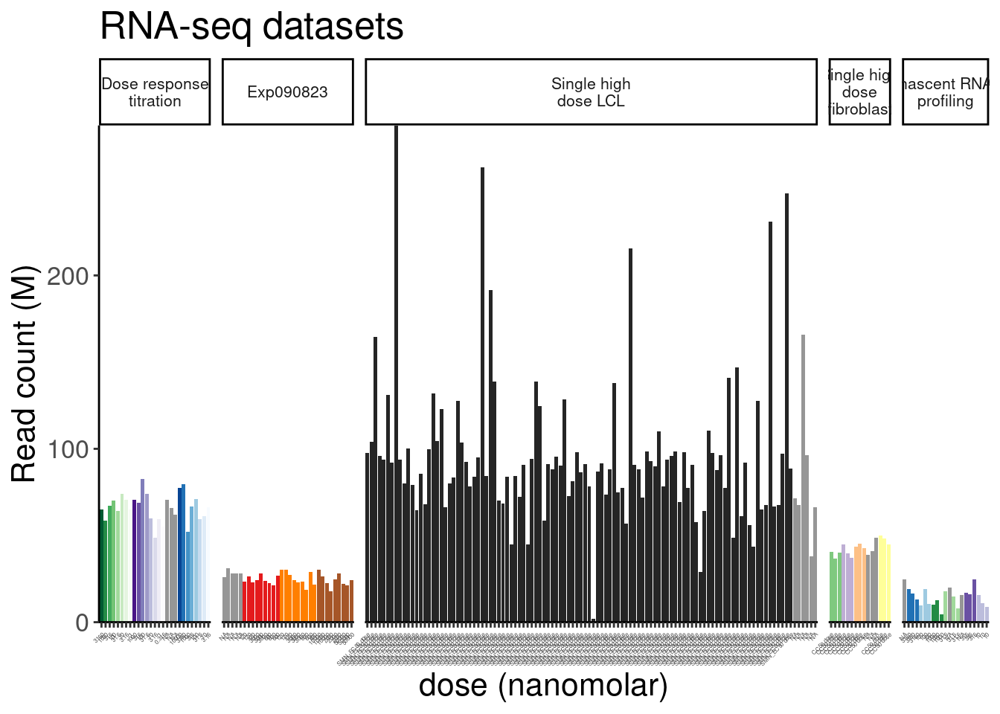
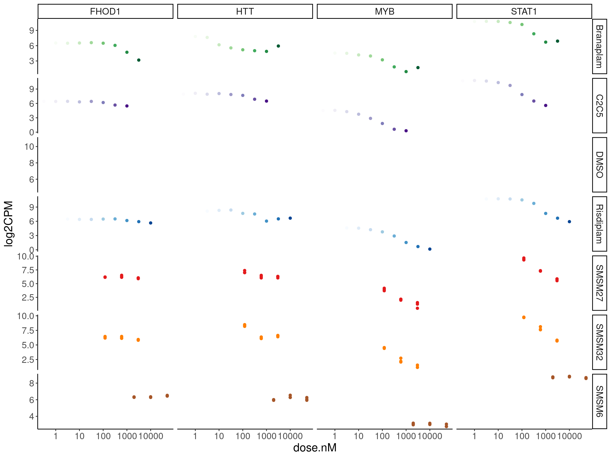

Last updated: 2023-11-08
Checks: 6 1
Knit directory:
20211209_JingxinRNAseq/analysis/
This reproducible R Markdown analysis was created with workflowr (version 1.7.0). The Checks tab describes the reproducibility checks that were applied when the results were created. The Past versions tab lists the development history.
The R Markdown file has unstaged changes. To know which version of
the R Markdown file created these results, you’ll want to first commit
it to the Git repo. If you’re still working on the analysis, you can
ignore this warning. When you’re finished, you can run
wflow_publish to commit the R Markdown file and build the
HTML.
Great job! The global environment was empty. Objects defined in the global environment can affect the analysis in your R Markdown file in unknown ways. For reproduciblity it’s best to always run the code in an empty environment.
The command set.seed(19900924) was run prior to running
the code in the R Markdown file. Setting a seed ensures that any results
that rely on randomness, e.g. subsampling or permutations, are
reproducible.
Great job! Recording the operating system, R version, and package versions is critical for reproducibility.
Nice! There were no cached chunks for this analysis, so you can be confident that you successfully produced the results during this run.
Great job! Using relative paths to the files within your workflowr project makes it easier to run your code on other machines.
Great! You are using Git for version control. Tracking code development and connecting the code version to the results is critical for reproducibility.
The results in this page were generated with repository version 5dce412. See the Past versions tab to see a history of the changes made to the R Markdown and HTML files.
Note that you need to be careful to ensure that all relevant files for
the analysis have been committed to Git prior to generating the results
(you can use wflow_publish or
wflow_git_commit). workflowr only checks the R Markdown
file, but you know if there are other scripts or data files that it
depends on. Below is the status of the Git repository when the results
were generated:
Ignored files:
Ignored: .DS_Store
Ignored: .Rhistory
Ignored: .Rproj.user/
Ignored: analysis/.RData
Ignored: analysis/.Rhistory
Ignored: analysis/20220707_TitrationSeries_DE_testing.nb.html
Ignored: code/.DS_Store
Ignored: code/._DOCK7.pdf
Ignored: code/._DOCK7_DMSO1.pdf
Ignored: code/._DOCK7_SM2_1.pdf
Ignored: code/._FKTN_DMSO_1.pdf
Ignored: code/._FKTN_SM2_1.pdf
Ignored: code/._MAPT.pdf
Ignored: code/._PKD1_DMSO_1.pdf
Ignored: code/._PKD1_SM2_1.pdf
Ignored: code/.snakemake/
Ignored: code/1KG_HighCoverageCalls.samplelist.txt
Ignored: code/5ssSeqs.tab
Ignored: code/Alignments/
Ignored: code/Branaplam_Risdiplam_specific_introns.bed.gz
Ignored: code/Branaplam_Risdiplam_specific_introns.bed.gz.tbi
Ignored: code/ChemCLIP/
Ignored: code/ClinVar/
Ignored: code/DE_testing/
Ignored: code/DE_tests.mat.counts.gz
Ignored: code/DE_tests.txt.gz
Ignored: code/DataNotToCommit/
Ignored: code/DonorMotifSearches/
Ignored: code/DoseResponseData/
Ignored: code/Exp202310_tracks.xml
Ignored: code/Exp202310_tracks_e.xml
Ignored: code/Exp202310_tracks_overlaid.xml
Ignored: code/Fastq/
Ignored: code/FastqFastp/
Ignored: code/FivePrimeSpliceSites.txt
Ignored: code/FragLenths/
Ignored: code/Ishigami/
Ignored: code/Meme/
Ignored: code/Multiqc/
Ignored: code/OMIM/
Ignored: code/OldBigWigs/
Ignored: code/PhyloP/
Ignored: code/QC/
Ignored: code/ReferenceGenomes/
Ignored: code/Rplots.pdf
Ignored: code/Session.vim
Ignored: code/Session2.vim
Ignored: code/SplicingAnalysis/
Ignored: code/TracksSession
Ignored: code/bigwigs/
Ignored: code/featureCounts/
Ignored: code/figs/
Ignored: code/fimo_out/
Ignored: code/geena/
Ignored: code/hg38ToMm39.over.chain.gz
Ignored: code/igv_session.template.xml
Ignored: code/igv_session.xml
Ignored: code/log
Ignored: code/logs/
Ignored: code/rstudio-server.job
Ignored: code/scratch/
Ignored: code/temp/
Ignored: code/test.txt.gz
Ignored: code/testPlottingWithMyScript.ForJingxin.sh
Ignored: code/testPlottingWithMyScript.ForJingxin2.sh
Ignored: code/testPlottingWithMyScript.ForJingxin3.sh
Ignored: code/testPlottingWithMyScript.ForJingxin4.sh
Ignored: code/testPlottingWithMyScript.sh
Ignored: code/tracks.with_chRNA.RisdiBrana.xml
Ignored: code/tracks.with_chRNA.RisdiBranaWithExtras.xml
Ignored: code/tracks.xml
Ignored: data/~$52CompoundsTempPlateLayoutForPipettingConvenience.xlsx
Untracked files:
Untracked: code/scripts/DE_edgeR_ExpOf3.R
Untracked: data/202310_FullMetadata.tsv.gz
Unstaged changes:
Modified: analysis/2023-10-31_Explore3MoleculesOfInterest.Rmd
Modified: analysis/2023-11-02_3MoleculesOfInterestLeafcutterDs.Rmd
Modified: code/Snakefile
Modified: code/rules/ExpMoleculesOfInterest.smk
Modified: code/rules/ProcessTitrationSeries.smk
Modified: code/rules/Process_chRNA.smk
Modified: code/rules/RNASeqProcessing.smk
Modified: code/scripts/GenometracksByGenotype
Note that any generated files, e.g. HTML, png, CSS, etc., are not included in this status report because it is ok for generated content to have uncommitted changes.
These are the previous versions of the repository in which changes were
made to the R Markdown
(analysis/2023-10-31_Explore3MoleculesOfInterest.Rmd) and
HTML (docs/2023-10-31_Explore3MoleculesOfInterest.html)
files. If you’ve configured a remote Git repository (see
?wflow_git_remote), click on the hyperlinks in the table
below to view the files as they were in that past version.
| File | Version | Author | Date | Message |
|---|---|---|---|---|
| Rmd | 5dce412 | Benjmain Fair | 2023-11-02 | updated nb |
| html | 5dce412 | Benjmain Fair | 2023-11-02 | updated nb |
| Rmd | 3c2aa40 | Benjmain Fair | 2023-11-01 | add 3molecule exp nb |
| html | 3c2aa40 | Benjmain Fair | 2023-11-01 | add 3molecule exp nb |
Based on previous experiment of 52 molecules, we dtermined three interesting molecules to sequence deeper and at 3 doses… Each dose (and DMSO control) was prepared in biological triplicate and subject to RNA-seq…
library(tidyverse)
library(RColorBrewer)
library(data.table)
library(gplots)
library(ggrepel)
library(edgeR)
# define some useful funcs
sample_n_of <- function(data, size, ...) {
dots <- quos(...)
group_ids <- data %>%
group_by(!!! dots) %>%
group_indices()
sampled_groups <- sample(unique(group_ids), size)
data %>%
filter(group_ids %in% sampled_groups)
}
# Set theme
theme_set(
theme_classic() +
theme(text=element_text(size=16, family="Helvetica")))
# I use layer a lot, to rotate long x-axis labels
Rotate_x_labels <- theme(axis.text.x = element_text(angle = 45, vjust = 1, hjust=1))FullMetadata <- read_tsv("../data/202310_FullMetadata.tsv.gz")
PSI <- fread("../code/SplicingAnalysis/leafcutter_all_samples_202310/leafcutter_perind_numers.bed.gz", sep = '\t' ) %>%
dplyr::select(-"NewMolecule.C04.2")
PreviouslyModeledJuncs <- read_tsv("../output/EC50Estimtes.FromPSI.txt.gz")
Modelled.introns <- PreviouslyModeledJuncs %>%
filter(!is.na(Steepness)) %>%
dplyr::select(`#Chrom`, start, end, strand=strand.y)
doseResponse.ColorKey <- FullMetadata %>%
group_by(treatment) %>%
filter(dose.nM == max(dose.nM)) %>%
ungroup() %>%
filter(treatment %in% c("Risdiplam", "Branaplam", "C2C5", "SMSM6", "SMSM32", "SMSM27")) %>%
distinct(treatment, color) %>%
add_row(treatment = "Old.DMSO", color = "#cccccc") %>%
add_row(treatment = "New.DMSO", color = "#252525")make heatmap of juncs
PSI.GAGT.Only <- PSI %>%
inner_join(Modelled.introns) %>%
dplyr::select(junc, A10.1:Exp090823_SMSM6_50000_3
) %>%
drop_na()
PSI.GAGT.Only.cormat <- PSI.GAGT.Only %>%
column_to_rownames("junc") %>%
cor(method='s')
heatmap.2(PSI.GAGT.Only.cormat, trace='none')
| Version | Author | Date |
|---|---|---|
| 3c2aa40 | Benjmain Fair | 2023-11-01 |
PSI.GAGT.Only.Only3Molecules <- PSI %>%
inner_join(Modelled.introns) %>%
dplyr::select(junc, contains("Exp090823")
) %>%
drop_na()
PSI.GAGT.Only.cormat <- PSI.GAGT.Only.Only3Molecules %>%
column_to_rownames("junc") %>%
cor(method='s')
PSI.GAGT.Only.cormat.colors <- PSI.GAGT.Only.Only3Molecules %>%
dplyr::select(-junc) %>%
colnames() %>%
as.data.frame() %>%
left_join(FullMetadata, by=c("."="leafcutter.name")) %>%
group_by(treatment) %>%
mutate(doseRank = dense_rank(dose.nM)) %>%
ungroup() %>%
mutate(dosecolor = dplyr::recode(doseRank, !!!c("1"="#cccccc", "2"="#969696", "3"="#525252"))) %>%
replace_na(list(dosecolor="#f7f7f7"))
heatmap.2(PSI.GAGT.Only.cormat, trace='none', cexRow = 0.5, cexCol=0.5, ColSideColors=PSI.GAGT.Only.cormat.colors$dosecolor, RowSideColors=PSI.GAGT.Only.cormat.colors$color)
| Version | Author | Date |
|---|---|---|
| 3c2aa40 | Benjmain Fair | 2023-11-01 |
PSI.GAGT.Only <- PSI %>%
inner_join(Modelled.introns) %>%
dplyr::select(junc, A10.1:Exp090823_SMSM6_50000_3
) %>%
drop_na()
pca.results <- PSI.GAGT.Only %>%
column_to_rownames("junc") %>%
scale() %>% t() %>% prcomp(scale=T)
summary(pca.results)Importance of components:
PC1 PC2 PC3 PC4 PC5 PC6 PC7
Standard deviation 9.1089 5.1977 4.28795 4.01418 3.29582 2.77333 2.65510
Proportion of Variance 0.3332 0.1085 0.07384 0.06471 0.04362 0.03089 0.02831
Cumulative Proportion 0.3332 0.4417 0.51556 0.58028 0.62390 0.65479 0.68310
PC8 PC9 PC10 PC11 PC12 PC13 PC14
Standard deviation 2.2922 1.94967 1.78253 1.74744 1.66844 1.61446 1.52818
Proportion of Variance 0.0211 0.01527 0.01276 0.01226 0.01118 0.01047 0.00938
Cumulative Proportion 0.7042 0.71947 0.73223 0.74449 0.75567 0.76614 0.77552
PC15 PC16 PC17 PC18 PC19 PC20 PC21
Standard deviation 1.50098 1.42748 1.42231 1.34748 1.31648 1.30291 1.29333
Proportion of Variance 0.00905 0.00818 0.00812 0.00729 0.00696 0.00682 0.00672
Cumulative Proportion 0.78457 0.79275 0.80087 0.80817 0.81513 0.82194 0.82866
PC22 PC23 PC24 PC25 PC26 PC27 PC28
Standard deviation 1.21346 1.20821 1.18801 1.16246 1.13052 1.12255 1.10596
Proportion of Variance 0.00591 0.00586 0.00567 0.00543 0.00513 0.00506 0.00491
Cumulative Proportion 0.83457 0.84044 0.84610 0.85153 0.85666 0.86173 0.86664
PC29 PC30 PC31 PC32 PC33 PC34 PC35
Standard deviation 1.08474 1.06351 1.05042 1.0223 1.00101 0.9857 0.97727
Proportion of Variance 0.00473 0.00454 0.00443 0.0042 0.00402 0.0039 0.00384
Cumulative Proportion 0.87136 0.87591 0.88034 0.8845 0.88856 0.8925 0.89630
PC36 PC37 PC38 PC39 PC40 PC41 PC42
Standard deviation 0.94208 0.92799 0.89820 0.89491 0.88503 0.86344 0.85586
Proportion of Variance 0.00356 0.00346 0.00324 0.00322 0.00315 0.00299 0.00294
Cumulative Proportion 0.89986 0.90332 0.90656 0.90977 0.91292 0.91591 0.91886
PC43 PC44 PC45 PC46 PC47 PC48 PC49
Standard deviation 0.84070 0.83022 0.80076 0.79794 0.76846 0.7562 0.75277
Proportion of Variance 0.00284 0.00277 0.00258 0.00256 0.00237 0.0023 0.00228
Cumulative Proportion 0.92169 0.92446 0.92704 0.92960 0.93197 0.9343 0.93654
PC50 PC51 PC52 PC53 PC54 PC55 PC56
Standard deviation 0.74404 0.72969 0.71372 0.7064 0.69480 0.68674 0.67508
Proportion of Variance 0.00222 0.00214 0.00205 0.0020 0.00194 0.00189 0.00183
Cumulative Proportion 0.93876 0.94090 0.94295 0.9449 0.94689 0.94878 0.95061
PC57 PC58 PC59 PC60 PC61 PC62 PC63
Standard deviation 0.66586 0.66323 0.6509 0.64068 0.62846 0.60634 0.59381
Proportion of Variance 0.00178 0.00177 0.0017 0.00165 0.00159 0.00148 0.00142
Cumulative Proportion 0.95239 0.95416 0.9559 0.95751 0.95910 0.96057 0.96199
PC64 PC65 PC66 PC67 PC68 PC69 PC70
Standard deviation 0.5910 0.57817 0.57155 0.55737 0.55568 0.5457 0.53302
Proportion of Variance 0.0014 0.00134 0.00131 0.00125 0.00124 0.0012 0.00114
Cumulative Proportion 0.9634 0.96473 0.96605 0.96729 0.96853 0.9697 0.97087
PC71 PC72 PC73 PC74 PC75 PC76 PC77
Standard deviation 0.5227 0.51210 0.50508 0.48483 0.47846 0.46855 0.46660
Proportion of Variance 0.0011 0.00105 0.00102 0.00094 0.00092 0.00088 0.00087
Cumulative Proportion 0.9720 0.97302 0.97405 0.97499 0.97591 0.97679 0.97767
PC78 PC79 PC80 PC81 PC82 PC83 PC84
Standard deviation 0.46283 0.45924 0.4462 0.43611 0.43333 0.42579 0.41051
Proportion of Variance 0.00086 0.00085 0.0008 0.00076 0.00075 0.00073 0.00068
Cumulative Proportion 0.97853 0.97937 0.9802 0.98094 0.98169 0.98242 0.98310
PC85 PC86 PC87 PC88 PC89 PC90 PC91
Standard deviation 0.39996 0.39767 0.38903 0.38150 0.38016 0.37425 0.36672
Proportion of Variance 0.00064 0.00064 0.00061 0.00058 0.00058 0.00056 0.00054
Cumulative Proportion 0.98374 0.98437 0.98498 0.98557 0.98615 0.98671 0.98725
PC92 PC93 PC94 PC95 PC96 PC97 PC98
Standard deviation 0.34811 0.34641 0.34331 0.33488 0.33123 0.32712 0.32363
Proportion of Variance 0.00049 0.00048 0.00047 0.00045 0.00044 0.00043 0.00042
Cumulative Proportion 0.98773 0.98822 0.98869 0.98914 0.98958 0.99001 0.99043
PC99 PC100 PC101 PC102 PC103 PC104 PC105
Standard deviation 0.31832 0.30911 0.30532 0.30220 0.29553 0.28147 0.27979
Proportion of Variance 0.00041 0.00038 0.00037 0.00037 0.00035 0.00032 0.00031
Cumulative Proportion 0.99084 0.99122 0.99160 0.99196 0.99231 0.99263 0.99295
PC106 PC107 PC108 PC109 PC110 PC111 PC112
Standard deviation 0.2726 0.26903 0.26452 0.25634 0.25277 0.24650 0.24030
Proportion of Variance 0.0003 0.00029 0.00028 0.00026 0.00026 0.00024 0.00023
Cumulative Proportion 0.9932 0.99354 0.99382 0.99408 0.99434 0.99458 0.99481
PC113 PC114 PC115 PC116 PC117 PC118 PC119
Standard deviation 0.23359 0.23125 0.22953 0.2254 0.2236 0.21395 0.21104
Proportion of Variance 0.00022 0.00021 0.00021 0.0002 0.0002 0.00018 0.00018
Cumulative Proportion 0.99503 0.99525 0.99546 0.9957 0.9959 0.99605 0.99623
PC120 PC121 PC122 PC123 PC124 PC125 PC126
Standard deviation 0.20723 0.20234 0.19712 0.19377 0.19291 0.18584 0.18463
Proportion of Variance 0.00017 0.00016 0.00016 0.00015 0.00015 0.00014 0.00014
Cumulative Proportion 0.99640 0.99656 0.99672 0.99687 0.99702 0.99716 0.99730
PC127 PC128 PC129 PC130 PC131 PC132 PC133
Standard deviation 0.17532 0.17109 0.16921 0.1606 0.1599 0.1578 0.1548
Proportion of Variance 0.00012 0.00012 0.00011 0.0001 0.0001 0.0001 0.0001
Cumulative Proportion 0.99742 0.99754 0.99765 0.9978 0.9979 0.9980 0.9980
PC134 PC135 PC136 PC137 PC138 PC139 PC140
Standard deviation 0.1540 0.15120 0.14779 0.14386 0.14219 0.13826 0.13429
Proportion of Variance 0.0001 0.00009 0.00009 0.00008 0.00008 0.00008 0.00007
Cumulative Proportion 0.9981 0.99824 0.99833 0.99841 0.99849 0.99857 0.99864
PC141 PC142 PC143 PC144 PC145 PC146 PC147
Standard deviation 0.13314 0.12991 0.12630 0.12547 0.12327 0.12112 0.11832
Proportion of Variance 0.00007 0.00007 0.00006 0.00006 0.00006 0.00006 0.00006
Cumulative Proportion 0.99871 0.99878 0.99884 0.99891 0.99897 0.99903 0.99908
PC148 PC149 PC150 PC151 PC152 PC153 PC154
Standard deviation 0.11396 0.11166 0.10926 0.10361 0.10223 0.10150 0.09994
Proportion of Variance 0.00005 0.00005 0.00005 0.00004 0.00004 0.00004 0.00004
Cumulative Proportion 0.99914 0.99919 0.99923 0.99928 0.99932 0.99936 0.99940
PC155 PC156 PC157 PC158 PC159 PC160 PC161
Standard deviation 0.09668 0.09318 0.09127 0.08861 0.08832 0.08426 0.08295
Proportion of Variance 0.00004 0.00003 0.00003 0.00003 0.00003 0.00003 0.00003
Cumulative Proportion 0.99944 0.99947 0.99951 0.99954 0.99957 0.99960 0.99963
PC162 PC163 PC164 PC165 PC166 PC167 PC168
Standard deviation 0.08161 0.07976 0.07738 0.07494 0.07325 0.07049 0.06599
Proportion of Variance 0.00003 0.00003 0.00002 0.00002 0.00002 0.00002 0.00002
Cumulative Proportion 0.99965 0.99968 0.99970 0.99972 0.99975 0.99977 0.99978
PC169 PC170 PC171 PC172 PC173 PC174 PC175
Standard deviation 0.06483 0.06210 0.06156 0.05933 0.05758 0.05485 0.05171
Proportion of Variance 0.00002 0.00002 0.00002 0.00001 0.00001 0.00001 0.00001
Cumulative Proportion 0.99980 0.99982 0.99983 0.99985 0.99986 0.99987 0.99988
PC176 PC177 PC178 PC179 PC180 PC181 PC182
Standard deviation 0.05093 0.04982 0.04690 0.04615 0.04317 0.04297 0.04043
Proportion of Variance 0.00001 0.00001 0.00001 0.00001 0.00001 0.00001 0.00001
Cumulative Proportion 0.99989 0.99990 0.99991 0.99992 0.99993 0.99993 0.99994
PC183 PC184 PC185 PC186 PC187 PC188 PC189
Standard deviation 0.03933 0.03755 0.03554 0.0348 0.03384 0.03038 0.03018
Proportion of Variance 0.00001 0.00001 0.00001 0.0000 0.00000 0.00000 0.00000
Cumulative Proportion 0.99995 0.99995 0.99996 1.0000 0.99997 0.99997 0.99997
PC190 PC191 PC192 PC193 PC194 PC195 PC196
Standard deviation 0.02808 0.02778 0.02606 0.02506 0.02403 0.02326 0.02136
Proportion of Variance 0.00000 0.00000 0.00000 0.00000 0.00000 0.00000 0.00000
Cumulative Proportion 0.99998 0.99998 0.99998 0.99999 0.99999 0.99999 0.99999
PC197 PC198 PC199 PC200 PC201 PC202 PC203
Standard deviation 0.02082 0.01785 0.01753 0.01634 0.01576 0.01313 0.01288
Proportion of Variance 0.00000 0.00000 0.00000 0.00000 0.00000 0.00000 0.00000
Cumulative Proportion 0.99999 1.00000 1.00000 1.00000 1.00000 1.00000 1.00000
PC204
Standard deviation 4.045e-15
Proportion of Variance 0.000e+00
Cumulative Proportion 1.000e+00pca.results.to.plot <- pca.results$x %>%
as.data.frame() %>%
rownames_to_column("leafcutter.name") %>%
dplyr::select(leafcutter.name, PC1:PC6) %>%
left_join(FullMetadata, by="leafcutter.name")
pca.results.to.plot %>%
# filter(!Experiment=="Single high dose LCL") %>%
mutate(label = case_when(
Experiment == "Exp090823" & rep==1 ~ str_glue("{treatment}, {dose.nM}"),
TRUE ~ NA_character_
)) %>%
ggplot(aes(x=PC1, y=PC2, color=color, shape=Experiment)) +
geom_point(size=3) +
scale_color_identity() +
geom_text_repel(aes(label=label), max.overlaps=15, size=3) +
theme_bw() +
labs(title = "PCA using 294 GAGT introns\nAll samples")
| Version | Author | Date |
|---|---|---|
| 3c2aa40 | Benjmain Fair | 2023-11-01 |
gene.counts <- read_tsv("../code/featureCounts/AllSamples_Counts.txt", comment = "#") %>%
rename_with(~ str_replace(.x, "Alignments/STAR_Align/(.+?)/Aligned.sortedByCoord.out.bam", "\\1"), contains("Alignments")) %>%
dplyr::select(-c(2:6)) %>%
column_to_rownames("Geneid") %>%
DGEList() %>%
calcNormFactors()
counts.plot.dat <- gene.counts$samples %>%
rownames_to_column("old.sample.name") %>%
inner_join(FullMetadata, by="old.sample.name") %>%
mutate(dose.nM = case_when(
treatment == "DMSO" ~ "NA",
cell.type == "Fibroblast" ~ "CC50 dose",
Experiment == "Single high dose LCL" ~ "SMN_EC90 dose",
TRUE ~ as.character(dose.nM)
)) %>%
mutate(label = dose.nM) %>%
arrange(Experiment, treatment, dose.nM)
counts.plot.labels <- counts.plot.dat %>%
dplyr::select(old.sample.name, label) %>% deframe()
ReadsPerDataset <- ggplot(counts.plot.dat, aes(x=old.sample.name, y=lib.size/2E6, fill=color)) +
geom_col() +
scale_fill_identity() +
scale_x_discrete(name="dose (nanomolar)", label=counts.plot.labels) +
scale_y_continuous(expand=c(0,0)) +
theme(axis.text.x = element_text(angle = 45, vjust = 1, hjust=1, size=3)) +
theme(strip.text.x = element_text(size = 8)) +
facet_grid(~Experiment, scales = "free_x", space = "free_x", labeller = label_wrap_gen(15)) +
labs(title="RNA-seq datasets", y="Read count (M)")
ReadsPerDataset
| Version | Author | Date |
|---|---|---|
| 3c2aa40 | Benjmain Fair | 2023-11-01 |
dose response curves
CPM.mat <- cpm(gene.counts, prior.count = 0.1, log = T)
symbols <- read_tsv("../data/Genes.list.txt")
FullMetadata# A tibble: 205 × 14
treatment cell.type dose.nM libType rep old.sample.name SampleName bigwig
<chr> <chr> <dbl> <chr> <dbl> <chr> <chr> <chr>
1 WA01 LCL NA polyA 1 NewMolecule.A01-1 WA01_NA_L… <NA>
2 WA02 LCL NA polyA 1 NewMolecule.A02-1 WA02_NA_L… <NA>
3 WA03 LCL NA polyA 1 NewMolecule.A03-1 WA03_NA_L… <NA>
4 WA04 LCL NA polyA 1 NewMolecule.A04-1 WA04_NA_L… <NA>
5 WA05 LCL NA polyA 1 NewMolecule.A05-1 WA05_NA_L… <NA>
6 WA06 LCL NA polyA 1 NewMolecule.A06-1 WA06_NA_L… <NA>
7 WA07 LCL NA polyA 1 NewMolecule.A07-1 WA07_NA_L… <NA>
8 WA08 LCL NA polyA 1 NewMolecule.A08-1 WA08_NA_L… <NA>
9 WA09 LCL NA polyA 1 NewMolecule.A09-1 WA09_NA_L… <NA>
10 WA10 LCL NA polyA 1 NewMolecule.A10-1 WA10_NA_L… <NA>
# … with 195 more rows, and 6 more variables: group <chr>, color <chr>,
# bed <chr>, supergroup <chr>, Experiment <chr>, leafcutter.name <chr>FullMetadata %>%
filter(Experiment == "Exp090823")# A tibble: 32 × 14
treatment cell.type dose.nM libType rep old.sample.name SampleName bigwig
<chr> <chr> <dbl> <chr> <dbl> <chr> <chr> <chr>
1 DMSO LCL NA polyA 1 Exp090823_DMSO_N… <NA> <NA>
2 DMSO LCL NA polyA 2 Exp090823_DMSO_N… <NA> <NA>
3 DMSO LCL NA polyA 3 Exp090823_DMSO_N… <NA> <NA>
4 DMSO LCL NA polyA 4 Exp090823_DMSO_N… <NA> <NA>
5 DMSO LCL NA polyA 5 Exp090823_DMSO_N… <NA> <NA>
6 SMSM27 LCL 120 polyA 1 Exp090823_SMSM27… <NA> <NA>
7 SMSM27 LCL 120 polyA 2 Exp090823_SMSM27… <NA> <NA>
8 SMSM27 LCL 120 polyA 3 Exp090823_SMSM27… <NA> <NA>
9 SMSM27 LCL 600 polyA 1 Exp090823_SMSM27… <NA> <NA>
10 SMSM27 LCL 600 polyA 2 Exp090823_SMSM27… <NA> <NA>
# … with 22 more rows, and 6 more variables: group <chr>, color <chr>,
# bed <chr>, supergroup <chr>, Experiment <chr>, leafcutter.name <chr>CPM.mat %>%
as.data.frame() %>%
rownames_to_column() %>%
mutate(ensembl_gene_id = str_replace_all(rowname, "\\..+$", "")) %>%
as_tibble() %>%
left_join(symbols) %>%
filter(hgnc_symbol %in% c("HTT", "MYB", "FHOD1", "STAT1")) %>%
dplyr::select(-rowname) %>%
pivot_longer(names_to = "old.sample.name", values_to = "log2CPM", -c("hgnc_symbol", "ensembl_gene_id")) %>%
left_join(FullMetadata) %>%
filter(Experiment %in% c("Dose response titration", "Exp090823")) %>%
group_by(Experiment, treatment, ensembl_gene_id) %>%
mutate(doseRank = dense_rank(dose.nM)) %>%
ungroup() %>%
ggplot(aes(x=dose.nM, y=log2CPM, group=rep, color=color)) +
scale_color_identity() +
geom_point() +
scale_x_continuous(trans='log10') +
facet_grid(treatment~hgnc_symbol, scales="free")
| Version | Author | Date |
|---|---|---|
| 3c2aa40 | Benjmain Fair | 2023-11-01 |
Colors <- FullMetadata %>%
group_by(treatment) %>%
filter(dose.nM == max(dose.nM) | treatment == "DMSO") %>%
distinct(dose.nM, treatment, color) %>%
dplyr::select(treatment, color)
CPM.mat %>%
as.data.frame() %>%
rownames_to_column() %>%
mutate(ensembl_gene_id = str_replace_all(rowname, "\\..+$", "")) %>%
as_tibble() %>%
left_join(symbols) %>%
filter(hgnc_symbol %in% c("HTT", "MYB", "FHOD1", "STAT1", "CRYL1", "DENND5A", "ATG5", "BTG2", "ZIK1", "HSD17B4","EIF2AK4", "SOS2", "ALG8", "MLLT10")) %>%
dplyr::select(-rowname) %>%
pivot_longer(names_to = "old.sample.name", values_to = "log2CPM", -c("hgnc_symbol", "ensembl_gene_id")) %>%
left_join(FullMetadata) %>%
filter(Experiment %in% c("Dose response titration", "Exp090823")) %>%
mutate(doseInApproxRisdiscale = case_when(
treatment == "Risdiplam" ~ dose.nM,
treatment == "C2C5" ~ dose.nM * 10,
treatment == "Branaplam" ~ dose.nM * sqrt(10),
treatment == "DMSO" ~ 0.316,
TRUE ~ dose.nM * sqrt(10),
)) %>%
mutate(treatment = case_when(
treatment == "DMSO" & Experiment == "Dose response titration" ~ "Old.DMSO",
treatment == "DMSO" & Experiment == "Exp090823" ~ "New.DMSO",
TRUE ~ treatment
)) %>%
ggplot(aes(x=doseInApproxRisdiscale, y=log2CPM, group=interaction(rep, treatment), color=treatment)) +
geom_point() +
geom_line() +
scale_x_continuous(trans='log10') +
facet_wrap(~hgnc_symbol, scales="free") +
scale_color_manual(values=deframe(doseResponse.ColorKey)) +
Rotate_x_labels +
labs(x="nanomolar of risdiplam (or approx equivalent)") +
theme(legend.position='bottom')
| Version | Author | Date |
|---|---|---|
| 3c2aa40 | Benjmain Fair | 2023-11-01 |
PSI.GAGT.Only %>%
pivot_longer(names_to = "leafcutter.name", values_to = "LeafcutterPSI", -c("junc")) %>%
left_join(FullMetadata) %>%
filter(Experiment %in% c("Dose response titration", "Exp090823")) %>%
mutate(doseInApproxRisdiscale = case_when(
treatment == "Risdiplam" ~ dose.nM,
treatment == "C2C5" ~ dose.nM * 10,
treatment == "Branaplam" ~ dose.nM * sqrt(10),
treatment == "DMSO" ~ 0.316,
TRUE ~ dose.nM * sqrt(10),
)) %>%
mutate(treatment = case_when(
treatment == "DMSO" & Experiment == "Dose response titration" ~ "Old.DMSO",
treatment == "DMSO" & Experiment == "Exp090823" ~ "New.DMSO",
TRUE ~ treatment
)) %>%
mutate(junc = str_replace(junc, "^(.+?):clu_.+$", "\\1")) %>%
sample_n_of(20, junc) %>%
left_join(
PreviouslyModeledJuncs %>%
mutate(junc = str_replace(junc, "^(.+?):clu_.+$", "\\1")) %>%
dplyr::select(junc, seq, gene_names),
) %>%
mutate(PosMinus4Minus3 = str_extract(seq, "^\\w{2}")) %>%
mutate(facetName = str_glue("{PosMinus4Minus3}, {gene_names}\n{junc}")) %>%
ggplot(aes(x=doseInApproxRisdiscale, y=LeafcutterPSI, group=interaction(rep, treatment), color=treatment)) +
geom_point() +
geom_line() +
scale_x_continuous(trans='log10') +
facet_wrap(~facetName, scales="free") +
scale_color_manual(values=deframe(doseResponse.ColorKey)) +
Rotate_x_labels +
labs(x="nanomolar of risdiplam (or approx equivalent)", caption="FacetTitle:\nNN in NNGA|GT, gene\njunc coords") +
theme(legend.position='bottom')PSI.GAGT.Only %>%
pivot_longer(names_to = "leafcutter.name", values_to = "LeafcutterPSI", -c("junc")) %>%
left_join(FullMetadata) %>%
filter(Experiment %in% c("Dose response titration", "Exp090823")) %>%
mutate(doseInApproxRisdiscale = case_when(
treatment == "Risdiplam" ~ dose.nM,
treatment == "C2C5" ~ dose.nM * 10,
treatment == "Branaplam" ~ dose.nM * sqrt(10),
treatment == "DMSO" ~ 0.316,
TRUE ~ dose.nM * sqrt(10),
)) %>%
mutate(treatment = case_when(
treatment == "DMSO" & Experiment == "Dose response titration" ~ "Old.DMSO",
treatment == "DMSO" & Experiment == "Exp090823" ~ "New.DMSO",
TRUE ~ treatment
)) %>%
mutate(junc = str_replace(junc, "^(.+?):clu_.+$", "\\1")) %>%
left_join(
PreviouslyModeledJuncs %>%
mutate(junc = str_replace(junc, "^(.+?):clu_.+$", "\\1")) %>%
dplyr::select(junc, seq, gene_names),
) %>%
filter(gene_names %in% c("HTT", "MYB", "FHOD1", "STAT1", "CRYL1", "DENND5A", "ATG5", "BTG2", "ZIK1", "HSD17B4","EIF2AK4", "SOS2", "ALG8", "MLLT10")) %>%
mutate(PosMinus4Minus3 = str_extract(seq, "^\\w{2}")) %>%
mutate(facetName = str_glue("{PosMinus4Minus3}, {gene_names}\n{junc}")) %>%
ggplot(aes(x=doseInApproxRisdiscale, y=LeafcutterPSI, group=interaction(rep, treatment), color=treatment)) +
geom_point() +
geom_line() +
scale_x_continuous(trans='log10') +
facet_wrap(~facetName, scales="free") +
scale_color_manual(values=deframe(doseResponse.ColorKey)) +
Rotate_x_labels +
labs(x="nanomolar of risdiplam (or approx equivalent)", caption="FacetTitle:\nNN in NNGA|GT, gene\njunc coords") +
theme(legend.position='bottom')I think to further process this data, one useful approach will be to fit a loglogistic model, with the upper limit, lower limit, and slope fixed, and then only EC50 may change… This is how I processed some of the branaplam/C2C5/risdiplam titration data… so it would make it easier to integrate results.
Perhaps the other way to make sense of the data is to look at the distribution of spearman correlatino of log2FC of introns, grouped by NNGA|GT motif…
I will accomplish these tasks in the snakemake or in some other notebooks…
sessionInfo()R version 4.2.0 (2022-04-22)
Platform: x86_64-pc-linux-gnu (64-bit)
Running under: CentOS Linux 7 (Core)
Matrix products: default
BLAS/LAPACK: /software/openblas-0.3.13-el7-x86_64/lib/libopenblas_haswellp-r0.3.13.so
locale:
[1] LC_CTYPE=en_US.UTF-8 LC_NUMERIC=C LC_TIME=C
[4] LC_COLLATE=C LC_MONETARY=C LC_MESSAGES=C
[7] LC_PAPER=C LC_NAME=C LC_ADDRESS=C
[10] LC_TELEPHONE=C LC_MEASUREMENT=C LC_IDENTIFICATION=C
attached base packages:
[1] stats graphics grDevices utils datasets methods base
other attached packages:
[1] edgeR_3.38.4 limma_3.52.4 ggrepel_0.9.1 gplots_3.1.3
[5] data.table_1.14.2 RColorBrewer_1.1-3 forcats_0.5.1 stringr_1.4.0
[9] dplyr_1.0.9 purrr_0.3.4 readr_2.1.2 tidyr_1.2.0
[13] tibble_3.1.7 ggplot2_3.3.6 tidyverse_1.3.1
loaded via a namespace (and not attached):
[1] bitops_1.0-7 fs_1.5.2 lubridate_1.8.0 bit64_4.0.5
[5] httr_1.4.3 rprojroot_2.0.3 tools_4.2.0 backports_1.4.1
[9] bslib_0.3.1 utf8_1.2.2 R6_2.5.1 KernSmooth_2.23-20
[13] DBI_1.1.2 colorspace_2.0-3 withr_2.5.0 tidyselect_1.1.2
[17] bit_4.0.4 compiler_4.2.0 git2r_0.30.1 cli_3.3.0
[21] rvest_1.0.2 xml2_1.3.3 labeling_0.4.2 sass_0.4.1
[25] caTools_1.18.2 scales_1.2.0 digest_0.6.29 rmarkdown_2.14
[29] R.utils_2.11.0 pkgconfig_2.0.3 htmltools_0.5.2 dbplyr_2.1.1
[33] fastmap_1.1.0 highr_0.9 rlang_1.0.2 readxl_1.4.0
[37] rstudioapi_0.13 jquerylib_0.1.4 generics_0.1.2 farver_2.1.0
[41] jsonlite_1.8.0 gtools_3.9.2 vroom_1.5.7 R.oo_1.24.0
[45] magrittr_2.0.3 Rcpp_1.0.8.3 munsell_0.5.0 fansi_1.0.3
[49] lifecycle_1.0.1 R.methodsS3_1.8.1 stringi_1.7.6 whisker_0.4
[53] yaml_2.3.5 grid_4.2.0 parallel_4.2.0 promises_1.2.0.1
[57] crayon_1.5.1 lattice_0.20-45 haven_2.5.0 hms_1.1.1
[61] locfit_1.5-9.7 knitr_1.39 pillar_1.7.0 reprex_2.0.1
[65] glue_1.6.2 evaluate_0.15 modelr_0.1.8 vctrs_0.4.1
[69] tzdb_0.3.0 httpuv_1.6.5 cellranger_1.1.0 gtable_0.3.0
[73] assertthat_0.2.1 xfun_0.30 broom_0.8.0 later_1.3.0
[77] workflowr_1.7.0 ellipsis_0.3.2